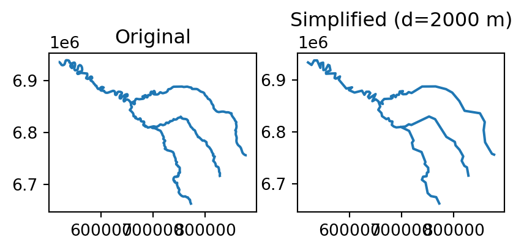
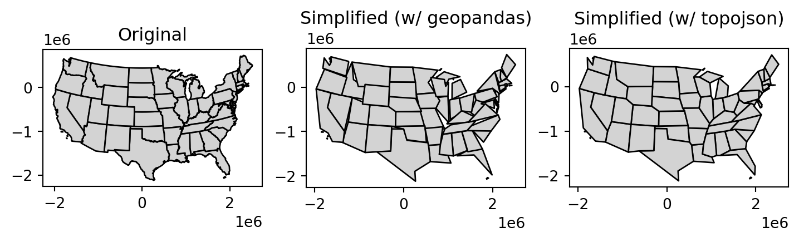
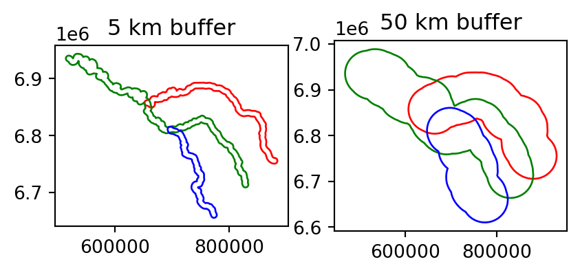
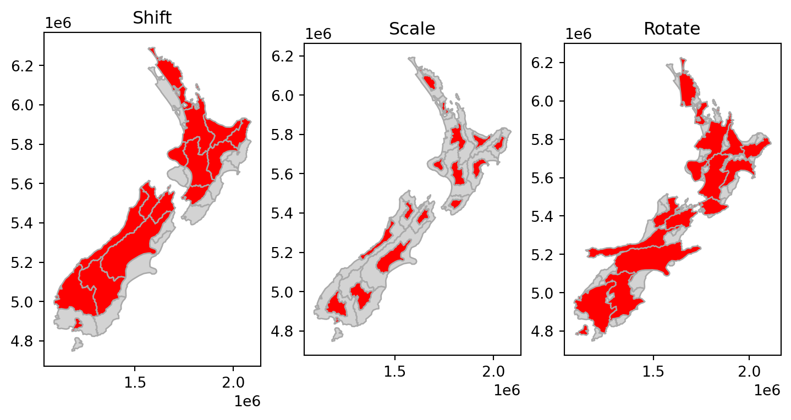
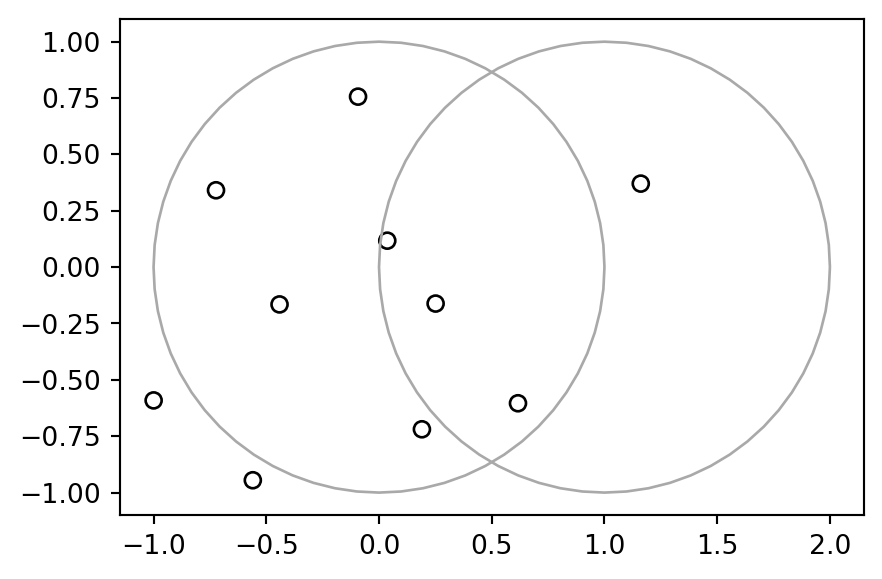
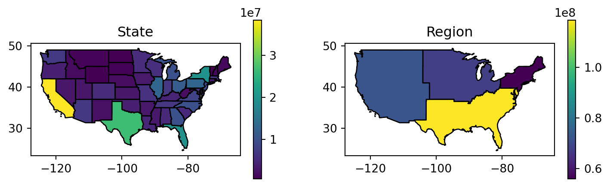

import numpy as np
import shapely.geometry
import geopandas as gpd
import topojson as tp4 Geometry operations
4.1 Prerequisites
Packages…
Sample data…
seine = gpd.read_file("data/seine.gpkg")
us_states = gpd.read_file("data/us_states.gpkg")
nz = gpd.read_file("data/nz.gpkg")4.2 Introduction
So far the book has explained the structure of geographic datasets (Chapter 2), and how to manipulate them based on their non-geographic attributes (Chapter 3) and spatial relations (Chapter 4). This chapter focusses on manipulating the geographic elements of geographic objects, for example by simplifying and converting vector geometries, cropping raster datasets, and converting vector objects into rasters and from rasters into vectors. After reading it—and attempting the exercises at the end—you should understand and have control over the geometry column in sf objects and the extent and geographic location of pixels represented in rasters in relation to other geographic objects.
Section 4.3 covers transforming vector geometries with ‘unary’ and ‘binary’ operations. Unary operations work on a single geometry in isolation, including simplification (of lines and polygons), the creation of buffers and centroids, and shifting/scaling/rotating single geometries using ‘affine transformations’ (Section 4.3.1 to Section 4.3.4). Binary transformations modify one geometry based on the shape of another, including clipping and geometry unions, covered in Section 4.3.5 and Section 4.3.7, respectively. Type transformations (from a polygon to a line, for example) are demonstrated in Section Section 4.3.8.
Section 4.4 covers geometric transformations on raster objects. This involves changing the size and number of the underlying pixels, and assigning them new values. It teaches how to change the resolution (also called raster aggregation and disaggregation), the extent and the origin of a raster. These operations are especially useful if one would like to align raster datasets from diverse sources. Aligned raster objects share a one-to-one correspondence between pixels, allowing them to be processed using map algebra operations, described in Section 4.3.2. The final Section 6 connects vector and raster objects. It shows how raster values can be ‘masked’ and ‘extracted’ by vector geometries. Importantly it shows how to ‘polygonize’ rasters and ‘rasterize’ vector datasets, making the two data models more interchangeable.
4.3 Geometric operations on vector data
This section is about operations that in some way change the geometry of vector layers. It is more advanced than the spatial data operations presented in the previous chapter (in Section 3.3), because here we drill down into the geometry: the functions discussed in this section work on the geometric (GeoSeries) part, either as standalone object or as part of a GeoDataFrame.
4.3.1 Simplification
Simplification is a process for generalization of vector objects (lines and polygons) usually for use in smaller scale maps. Another reason for simplifying objects is to reduce the amount of memory, disk space and network bandwidth they consume: it may be wise to simplify complex geometries before publishing them as interactive maps. The geopandas package provides the .simplify method, which uses the GEOS implementation of the Douglas-Peucker algorithm to reduce the vertex count. .simplify uses the tolerance to control the level of generalization in map units (see Douglas and Peucker 1973 for details).
For example, a simplified geometry of a "LineString" geometry, representing the river Seine and tributaries, using tolerance of 2000 meters, can created using the following command:
seine_simp = seine.simplify(2000) # 2000 mFigure Figure 4.1 illustrates the input and the result of the simplification:
fig, axes = plt.subplots(ncols=2)
seine.plot(ax=axes[0])
seine_simp.plot(ax=axes[1])
axes[0].set_title('Original')
axes[1].set_title('Simplified (d=2000 m)');
The resulting seine_simp object is a copy of the original seine but with fewer vertices. This is apparent, with the result being visually simpler (Figure 4.1, right) and consuming less memory than the original object, as verified below:
import sys
sys.getsizeof(seine) ## Original (bytes)370sys.getsizeof(seine_simp) ## Simplified (bytes)184Simplification is also applicable for polygons. This is illustrated using us_states, representing the contiguous United States. As we show in Chapter 6, GEOS assumes that the data is in a projected CRS and this could lead to unexpected results when using a geographic CRS. Therefore, the first step is to project the data into some adequate projected CRS, such as US National Atlas Equal Area (epsg = 2163) (on the left in Figure Figure 4.2):
us_states2163 = us_states.to_crs(2163)The .simplify method from geopandas works the same way with a "Polygon"/"MultiPolygon" layer such as us_states2163:
us_states_simp1 = us_states2163.simplify(100000)A limitation with .simplify is that it simplifies objects on a per-geometry basis. This means the “topology” is lost, resulting in overlapping and “holey” areal units illustrated in Figure Figure 4.2 (middle panel). The toposimplify function from topojson provides an alternative that overcomes this issue. By default it uses the Douglas-Peucker algorithm like the .simplify method. Another algorithm known as Visvalingam-Whyatt, which overcomes some limitations of the Douglas-Peucker algorithm (Visvalingam and Whyatt 1993), is also available in toposimplify. The main advanatage of toposimplify, however, is that it is topologically “aware”. That is, it simplifies the combined borders of the polygons (rather than each polygon on its own), thus ensuring that the overlap is maintained. The following code chunk uses this function to simplify us_states2163:
topo = tp.Topology(us_states2163, prequantize=False)
us_states_simp2 = topo.toposimplify(100000).to_gdf()/usr/local/lib/python3.11/site-packages/topojson/core/dedup.py:107: RuntimeWarning: invalid value encountered in cast
data["bookkeeping_shared_arcs"] = array_bk_sarcs.astype(np.int64).tolist()Figure Figure 4.2 demonstrates the two simplification methods applied to us_states2163.
fig, axes = plt.subplots(ncols=3, figsize=(9,5))
us_states2163.plot(ax=axes[0], color='lightgrey', edgecolor='black')
us_states_simp1.plot(ax=axes[1], color='lightgrey', edgecolor='black')
us_states_simp2.plot(ax=axes[2], color='lightgrey', edgecolor='black')
axes[0].set_title("Original")
axes[1].set_title("Simplified (w/ geopandas)")
axes[2].set_title("Simplified (w/ topojson)");
4.3.2 Centroids
Centroid operations identify the center of geographic objects. Like statistical measures of central tendency (including mean and median definitions of ‘average’), there are many ways to define the geographic center of an object. All of them create single point representations of more complex vector objects.
The most commonly used centroid operation is the geographic centroid. This type of centroid operation (often referred to as ‘the centroid’) represents the center of mass in a spatial object (think of balancing a plate on your finger). Geographic centroids have many uses, for example to create a simple point representation of complex geometries, or to estimate distances between polygons. Centroids of the geometries in a GeoSeries or a GeoDataFrame are accessible through the .centroid property, as demonstrated in the code below, which generates the geographic centroids of regions in New Zealand and tributaries to the River Seine, illustrated with black points in Figure 4.3.
nz_centroid = nz.centroid
seine_centroid = seine.centroidSometimes the geographic centroid falls outside the boundaries of their parent objects (think of a doughnut). In such cases point on surface operations can be used to guarantee the point will be in the parent object (e.g., for labeling irregular multipolygon objects such as island states), as illustrated by the red points in Figure 4.3. Notice that these red points always lie on their parent objects. They were created with the representative_point method, as follows:
nz_pos = nz.representative_point()
seine_pos = seine.representative_point()The centroids and points in surface are illustrated in Figure 4.3:
fig, axes = plt.subplots(ncols=2)
nz.plot(ax=axes[0], color="white", edgecolor="lightgrey")
nz_centroid.plot(ax=axes[0], color="None", edgecolor="black")
nz_pos.plot(ax=axes[0], color="None", edgecolor="red")
seine.plot(ax=axes[1], color="grey")
seine_pos.plot(ax=axes[1], color="None", edgecolor="red")
seine_centroid.plot(ax=axes[1], color="None", edgecolor="black");
4.3.3 Buffers
Buffers are polygons representing the area within a given distance of a geometric feature: regardless of whether the input is a point, line or polygon, the output is a polygon. Unlike simplification (which is often used for visualization and reducing file size) buffering tends to be used for geographic data analysis. How many points are within a given distance of this line? Which demographic groups are within travel distance of this new shop? These kinds of questions can be answered and visualized by creating buffers around the geographic entities of interest.
Figure 4.4 illustrates buffers of different sizes (5 and 50 km) surrounding the river Seine and tributaries. These buffers were created with commands below, which show that the .buffer method, applied to a GeoSeries (or GeoDataFrame) requires one important argument: the buffer distance, provided in the units of the CRS (in this case meters):
seine_buff_5km = seine.buffer(5000)
seine_buff_50km = seine.buffer(50000)The 5 and 50 km buffers are visualized in Figure 4.4:
fig, axes = plt.subplots(ncols=2)
seine_buff_5km.plot(ax=axes[0], color="none", edgecolor=["red", "green", "blue"])
seine_buff_50km.plot(ax=axes[1], color="none", edgecolor=["red", "green", "blue"])
axes[0].set_title("5 km buffer")
axes[1].set_title("50 km buffer");
Note that both .centroid and .buffer return a GeoSeries object, even when the input is a GeoDataFrame:
seine_buff_5km0 POLYGON ((657550.332 6852587.97...
1 POLYGON ((517151.801 6930724.10...
2 POLYGON ((701519.740 6813075.49...
dtype: geometryIn the common scenario when the original attributes of the input features need to be retained, you can replace the existing geometry with the new GeoSeries as in:
seine_buff_5km = seine.copy()
seine_buff_5km['geometry'] = seine.buffer(5000)
seine_buff_5km| name | geometry | |
|---|---|---|
| 0 | Marne | POLYGON ((657550.332 6852587.97... |
| 1 | Seine | POLYGON ((517151.801 6930724.10... |
| 2 | Yonne | POLYGON ((701519.740 6813075.49... |
4.3.4 Affine transformations
Affine transformation is any transformation that preserves lines and parallelism. However, angles or length are not necessarily preserved. Affine transformations include, among others, shifting (translation), scaling and rotation. Additionally, it is possible to use any combination of these. Affine transformations are an essential part of geocomputation. For example, shifting is needed for labels placement, scaling is used in non-contiguous area cartograms, and many affine transformations are applied when reprojecting or improving the geometry that was created based on a distorted or wrongly projected map.
The geopandas package implements affine transformation, for objects of classes GeoSeries and GeoDataFrame. In both cases, the method is applied on the GeoSeries part, returning a new GeoSeries of transformed geometries.
Affine transformations of GeoSeries can be done using the .affine_transform method, which is a wrapper around the shapely.affinity.affine_transform function. According to the documentation, a 2D affine transformation requires a six-parameter list [a,b,d,e,xoff,yoff] which represents the following equations for transforming the coordinates:
\[ x' = a x + b y + x_\mathrm{off} \]
\[ y' = d x + e y + y_\mathrm{off} \]
There are also simplified GeoSeries methods for specific scenarios:
GeoSeries.translate(xoff=0.0, yoff=0.0, zoff=0.0)GeoSeries.scale(xfact=1.0, yfact=1.0, zfact=1.0, origin='center')GeoSeries.rotate(angle, origin='center', use_radians=False)GeoSeries.skew(angle, origin='center', use_radians=False)
For example, shifting only requires the \(x_{off}\) and \(y_{off}\), using .translate. The code below shifts the y-coordinates by 100,000 meters to the north, but leaves the x-coordinates untouched:
nz_shift = nz.translate(0, 100000)Scaling enlarges or shrinks objects by a factor. It can be applied either globally or locally. Global scaling increases or decreases all coordinates values in relation to the origin coordinates, while keeping all geometries topological relations intact.
Geopandas implements local scaling using the .scale method. Local scaling treats geometries independently and requires points around which geometries are going to be scaled, e.g., centroids. In the example below, each geometry is shrunk by a factor of two around the centroids (middle panel in Figure 4.5). To achieve that, we pass the 0.5 and 0.5 scaling factors (for x and y, respectively), and the "centroid" option for the point of origin. (Other than "centroid", it is possible to use "center" for the bounding box center, or specific point coordinates.)
nz_scale = nz.scale(0.5, 0.5, origin="centroid")Rotating the geometries can be done using the .rotate method. When rotating, we need to specify the rotation angle (positive values imply clockwise rotation) and the origin points (using the same options as in scale). For example, the following expression rotates nz by 30 degrees counter-clockwise, around the geometry centroids:
nz_rotate = nz.rotate(-30, origin="centroid")Figure 4.5 shows the original layer nz, and the shifting, scaling and rotation results.
fig, axes = plt.subplots(ncols=3, figsize=(9,5))
nz.plot(ax=axes[0], color="lightgrey", edgecolor="darkgrey")
nz_shift.plot(ax=axes[0], color="red", edgecolor="darkgrey")
nz.plot(ax=axes[1], color="lightgrey", edgecolor="darkgrey")
nz_scale.plot(ax=axes[1], color="red", edgecolor="darkgrey")
nz.plot(ax=axes[2], color="lightgrey", edgecolor="darkgrey")
nz_rotate.plot(ax=axes[2], color="red", edgecolor="darkgrey")
axes[0].set_title("Shift")
axes[1].set_title("Scale")
axes[2].set_title("Rotate");
4.3.5 Clipping
Spatial clipping is a form of spatial subsetting that involves changes to the geometry columns of at least some of the affected features.
Clipping can only apply to features more complex than points: lines, polygons and their ‘multi’ equivalents. To illustrate the concept we will start with a simple example: two overlapping circles with a center point one unit away from each other and a radius of one (Figure 4.6).
x = shapely.geometry.Point((0, 0)).buffer(1)
y = shapely.geometry.Point((1, 0)).buffer(1)
shapely.geometry.GeometryCollection([x, y])
Imagine you want to select not one circle or the other, but the space covered by both x and y. This can be done using the .intersection method from shapely, illustrated using objects named x and y which represent the left- and right-hand circles (Figure 4.7).
x.intersection(y)
The next lines of code demonstrate how this works for the .difference, .union, and .symmetric_difference operators:
x.difference(y)
x.union(y)
x.symmetric_difference(y)
4.3.6 Subsetting and clipping
Clipping objects can change their geometry but it can also subset objects, returning only features that intersect (or partly intersect) with a clipping/subsetting object. To illustrate this point, we will subset points that cover the bounding box of the circles x and y in Figure 4.6. Some points will be inside just one circle, some will be inside both and some will be inside neither. The following code sections generates a simple random distribution of points within the extent of circles x and y, resulting in output illustrated in Figure 4.8. We do this in two steps. First, we figure out the bounds where random points are to be generated:
bounds = x.union(y).bounds
bounds(-1.0, -1.0, 2.0, 1.0)Second, we use np.random.uniform to calculate n random x and y coordinates within the given bounds:
np.random.seed(1)
n = 10 ## Number of points to generate
coords_x = np.random.uniform(bounds[0], bounds[2], n)
coords_y = np.random.uniform(bounds[1], bounds[3], n)
coords = list(zip(coords_x, coords_y))
coords[(0.2510660141077219, -0.1616109711934104),
(1.1609734803264744, 0.370439000793519),
(-0.9996568755479653, -0.5910955005369651),
(-0.0930022821044807, 0.7562348727818908),
(-0.5597323275486609, -0.9452248136041477),
(-0.7229842156936066, 0.34093502035680445),
(-0.4412193658669873, -0.16539039526574606),
(0.03668218112914312, 0.11737965689150331),
(0.1903024226920098, -0.7192261228095325),
(0.6164502020100708, -0.6037970218302424)]Third, we transform the list of coordinates into a list of shapely points:
pnt = [shapely.geometry.Point(i) for i in coords]
pnt[<POINT (0.251 -0.162)>,
<POINT (1.161 0.37)>,
<POINT (-1 -0.591)>,
<POINT (-0.093 0.756)>,
<POINT (-0.56 -0.945)>,
<POINT (-0.723 0.341)>,
<POINT (-0.441 -0.165)>,
<POINT (0.037 0.117)>,
<POINT (0.19 -0.719)>,
<POINT (0.616 -0.604)>]and then to a GeoSeries:
pnt = gpd.GeoSeries(pnt)
pnt0 POINT (0.25107 -0.16161)
1 POINT (1.16097 0.37044)
2 POINT (-0.99966 -0.59110)
...
7 POINT (0.03668 0.11738)
8 POINT (0.19030 -0.71923)
9 POINT (0.61645 -0.60380)
Length: 10, dtype: geometryThe result is shown in Figure 4.8:
base = pnt.plot(color='none', edgecolor='black')
gpd.GeoSeries([x]).plot(ax=base, color='none', edgecolor='darkgrey');
gpd.GeoSeries([y]).plot(ax=base, color='none', edgecolor='darkgrey');
Now, we get back to our question: how to subset the points to only return the point that intersects with both x and y? The code chunks below demonstrate three ways to achieve the same result. We can calculate a boolean Series, evaluating whether each point of pnt intersects with the intersection of x and y:
sel = pnt.intersects(x.intersection(y))
sel0 True
1 False
2 False
...
7 True
8 False
9 True
Length: 10, dtype: boolthen use it to subset pnt to get the result pnt1:
pnt1 = pnt[sel]
pnt10 POINT (0.25107 -0.16161)
7 POINT (0.03668 0.11738)
9 POINT (0.61645 -0.60380)
dtype: geometryWe can also find the intersection between the input points represented by pnt, using the intersection of x and y as the subsetting/clipping object. Since the second argument is an individual shapely geometry (x.intersection(y)), we get “pairwise” intersections of each pnt with it:
pnt2 = pnt.intersection(x.intersection(y))
pnt20 POINT (0.25107 -0.16161)
1 POINT EMPTY
2 POINT EMPTY
...
7 POINT (0.03668 0.11738)
8 POINT EMPTY
9 POINT (0.61645 -0.60380)
Length: 10, dtype: geometryEmpty geometries can be filtered out to retain the required subset, and to get pnt2 which is identical to pnt1:
pnt2 = pnt2[~pnt2.is_empty] ## Subset non-empty geometries
pnt20 POINT (0.25107 -0.16161)
7 POINT (0.03668 0.11738)
9 POINT (0.61645 -0.60380)
dtype: geometryThis second approach will return features that partly intersect with x.intersection(y) but with modified geometries for spatially extensive features that cross the border of the subsetting object. The results are identical, but the implementation differs substantially.
Although the example above is rather contrived and provided for educational rather than applied purposes, and we encourage the reader to reproduce the results to deepen your understanding for handling geographic vector objects in R, it raises an important question: which implementation to use? Generally, more concise implementations should be favored, meaning the first approach above. We will return to the question of choosing between different implementations of the same technique or algorithm in Chapter 11.
4.3.7 Geometry unions
As we saw in Section 2.3.2, spatial aggregation can silently dissolve the geometries of touching polygons in the same group. This is demonstrated in the code chunk below in which 49 us_states are aggregated into 4 regions using the .dissolve method:
regions = us_states.dissolve(by='REGION', aggfunc='sum').reset_index()
regions/usr/local/lib/python3.11/site-packages/geopandas/geodataframe.py:1676: FutureWarning: The default value of numeric_only in DataFrameGroupBy.sum is deprecated. In a future version, numeric_only will default to False. Either specify numeric_only or select only columns which should be valid for the function.
aggregated_data = data.groupby(**groupby_kwargs).agg(aggfunc)| REGION | geometry | AREA | total_pop_10 | total_pop_15 | |
|---|---|---|---|---|---|
| 0 | Midwest | MULTIPOLYGON (((-89.10077 36.94... | 1.984047e+06 | 66514091.0 | 67546398.0 |
| 1 | Norteast | MULTIPOLYGON (((-75.61724 39.83... | 4.357609e+05 | 54909218.0 | 55989520.0 |
| 2 | South | MULTIPOLYGON (((-81.38550 30.27... | 2.314087e+06 | 112072990.0 | 118575377.0 |
| 3 | West | MULTIPOLYGON (((-118.36998 32.8... | 3.073145e+06 | 68444193.0 | 72264052.0 |
The result is shown in Figure 4.9:
fig, axes = plt.subplots(ncols=2, figsize=(9, 2.5))
us_states.plot(ax=axes[0], edgecolor='black', column='total_pop_15', legend=True)
regions.plot(ax=axes[1], edgecolor='black', column='total_pop_15', legend=True)
axes[0].set_title('State')
axes[1].set_title('Region');
What is going on in terms of the geometries? Behind the scenes, .dissolve combines the geometries and dissolve the boundaries between them using the .unary_union method per group. This is demonstrated in the code chunk below which creates a united western US using the standalone unary_union operation:
us_west = us_states[us_states['REGION'] == 'West']
us_west_union = us_west['geometry'].unary_unionNote that the result is a shapely geometry, as the individual attributes are “lost” as part of dissolving. The result is shown in Figure 4.10.
us_west_union
To dissolve two (or more) groups of a GeoDataFrame into one geometry, we can either use a combined condition:
sel = (us_states['REGION'] == 'West') | (us_states['NAME'] == 'Texas')
texas_union = us_states[sel]
texas_union = texas_union['geometry'].unary_unionor concatenate the two separate subsets:
us_west = us_states[us_states['REGION'] == 'West']
texas = us_states[us_states['NAME'] == 'Texas']
texas_union = pd.concat([us_west, texas]).unary_unionand then dissove using .unary_union. The result is identical in both cases, shown in Figure 4.11.
texas_union
4.3.8 Type transformations
Transformation of geometries, from one type to another, also known as “geometry casting”, is often required to facilitate spatial analysis. The shapely package can be used for geometry casting. The exact expression(s) depend on the specific transformation we are interested in. In general, you need to figure out the required input of the respective construstor function according to the “destination” geometry (e.g., shapely.geometry.LineString, etc.), then reshape the input of the “source” geometry into the right form to be passed to that function.
Let’s create a "MultiPoint" to illustrate how geometry casting works on shapely geometry objects:
multipoint = shapely.geometry.MultiPoint([(1,1), (3,3), (5,1)])
multipoint
A "LineString" can be created using shapely.geometry.LineString from a list of points. Consequently, a "MultiPoint" can be converted to a "LineString" by extracting the individual points into a list, then passing them to shapely.geometry.LineString:
linestring = shapely.geometry.LineString(list(multipoint.geoms))
linestring
A "Polygon" can also be created using function shapely.geometry.Polygon, which acceps a sequence of point coordinates. In principle, the last coordinate must be equal to the first, in order to form a closed shape. However, shapely.geometry.Polygon is able to complete the last coordinate automatically. Therefore:
polygon = shapely.geometry.Polygon([[p.x, p.y] for p in multipoint.geoms])
polygon
The source "MultiPoint" geometry, and the derived "LineString" and "Polygon" geometries are shown in Figure 4.12. Note that we convert the shapely geometries to GeoSeries for easier multi-panel plotting:
fig, axes = plt.subplots(ncols=3, figsize=(9,5))
gpd.GeoSeries(multipoint).plot(ax=axes[0])
gpd.GeoSeries(linestring).plot(ax=axes[1])
gpd.GeoSeries(polygon).plot(ax=axes[2])
axes[0].set_title("MultiPoint")
axes[1].set_title("LineString")
axes[2].set_title("Polygon");
Conversion from multipoint to linestring is a common operation that creates a line object from ordered point observations, such as GPS measurements or geotagged media. This allows spatial operations such as the length of the path traveled. Conversion from multipoint or linestring to polygon is often used to calculate an area, for example from the set of GPS measurements taken around a lake or from the corners of a building lot.
Our "LineString" geometry can be converted bact to a "MultiPoint" geometry by passing its coordinates directly to shapely.geometry.MultiPoint:
# 'LineString' -> 'MultiPoint'
shapely.geometry.MultiPoint(linestring.coords)
The "Polygon" (exterior) coordinates can be passed to shapely.geometry.MultiPoint as well:
# 'Polygon' -> 'MultiPoint'
shapely.geometry.MultiPoint(polygon.exterior.coords)
…
4.4 Geometric operations on raster data
4.4.1 Geometric intersections
…
4.4.2 Extent and origin
…
4.4.3 Aggregation and disaggregation
…
4.4.4 Resampling
…